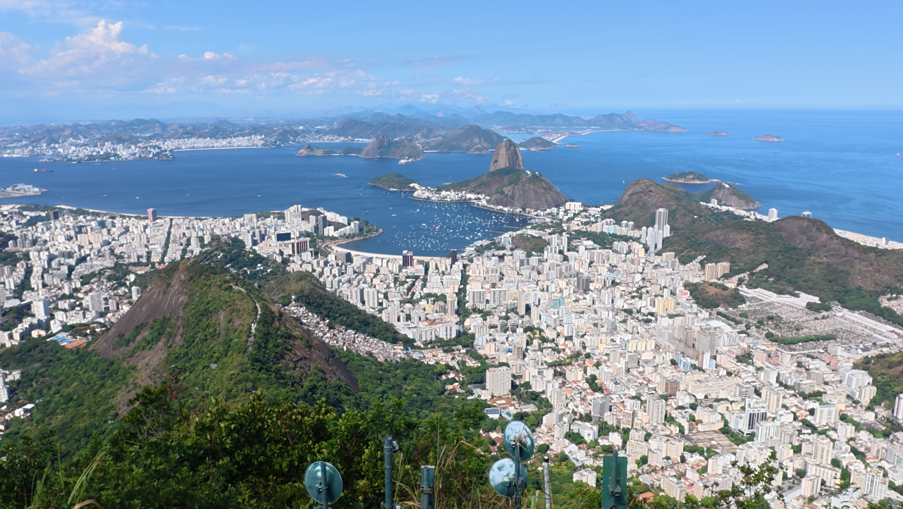
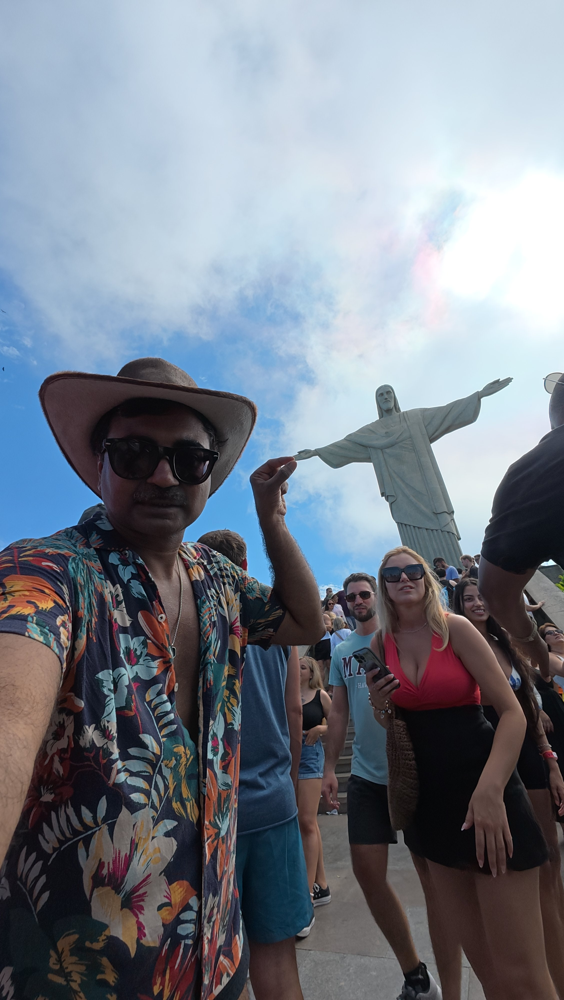
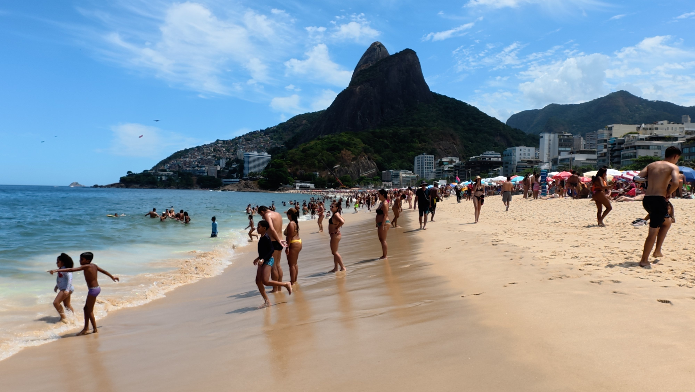
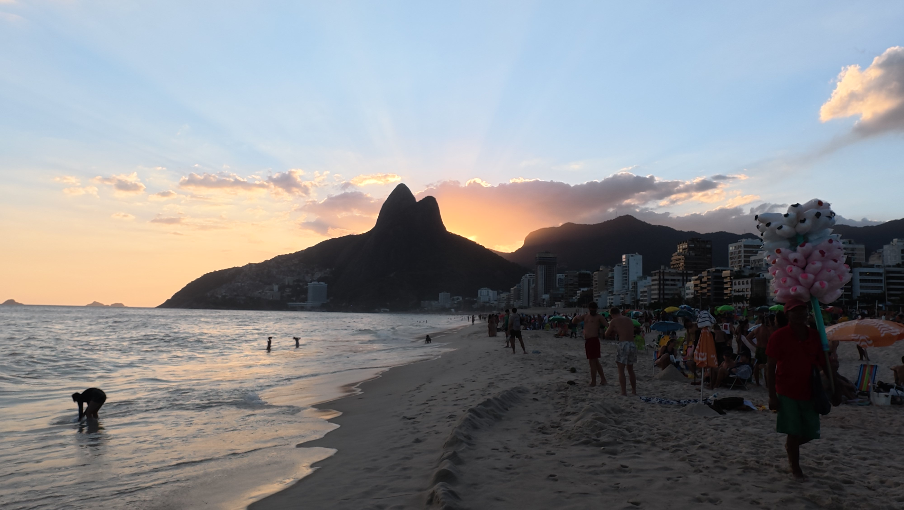
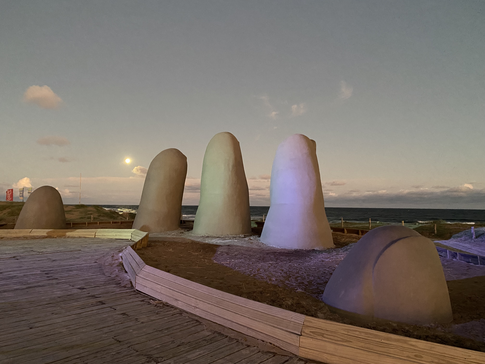
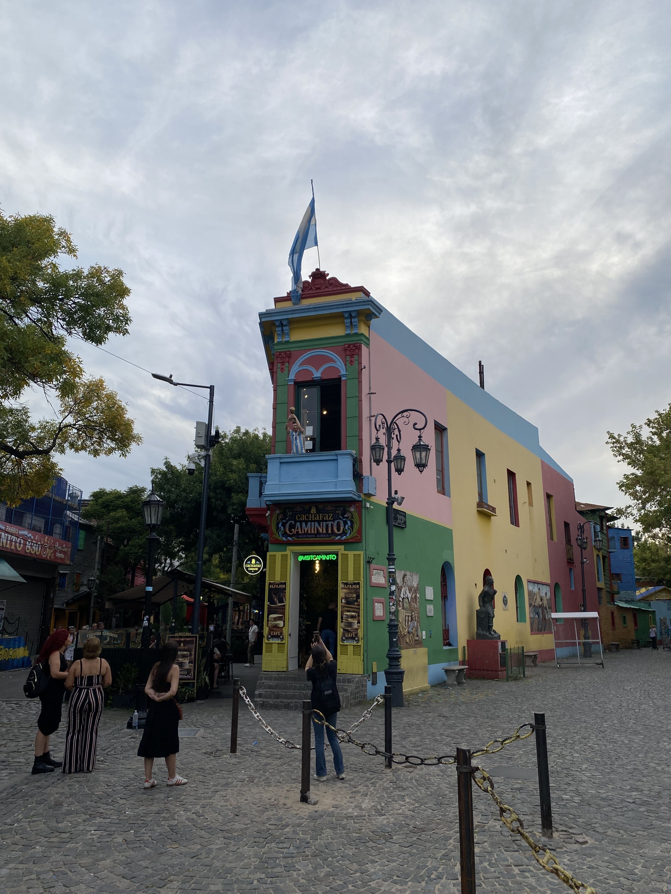

Experiencing Brazilian Carnival was a childhood dream. The itinerary was built around making that dream happen.
Three nights in São Paulo and twelve days in Rio de Janeiro put Carnival at the heart of the experience—not as a quick stop, but as the reason for going.
From there, the route moved south through Uruguay and Argentina, reaching Ushuaia for Patagonian hiking and a journey on the Beagle Channel, before turning north toward Iguazú Falls and a day across the border in Paraguay.
THE MOMENT IT BECAME REAL
RIO DE JANEIRO, BRAZIL10 SECONDS OF CARNIVAL
BEYOND THE CELEBRATIONS
Rio, in a different light.
RIO DE JANEIRO, BRAZILBEYOND CARNIVAL

FROM CHRIST THE REDEEMERA PANORAMIC VIEW

CHRIST THE REDEEMERA PERSONAL MOMENT

IPANEMA BEACHWHERE THE CITY MEETS THE OCEAN

IPANEMA BEACHTHE GOLDEN HOUR
01 / 05
01 / THE CITY BEYOND CARNIVAL
A city worth slowing down for.
With twelve days in Rio, there was room to experience more than the celebrations. The city's dramatic landscape was part of the dream, too.
THE JOURNEY Giving Carnival the time it deserved also created space to discover Rio itself.
02 / CHRIST THE REDEEMER
Rio from above.
A breathtaking panorama from Christ the Redeemer reveals the scale of the city and its remarkable setting between mountains and the coast.
THE EXPERIENCE From the energy of street celebrations to one of Rio's most unforgettable viewpoints.
03 / A PERSONAL MOMENT
Here, at the landmark.
A personal photograph at Christ the Redeemer, one of Rio's most recognizable sights. A moment to remember amid an unforgettable twelve days in the city.
THE JOURNEY Some moments deserve more than a place on the itinerary.
04 / IPANEMA BEACH
Where the city meets the ocean.
Ipanema Beach brought another side of Rio into view: a sweeping shoreline framed by the city's distinctive mountains, far from the energy of Carnival.
THE EXPERIENCE Making time for the beach was as much a part of experiencing Rio as the celebrations.
05 / IPANEMA AT SUNSET
Rio's golden hour.
The same beach, transformed by the evening light. A sunset at Ipanema offered a different perspective on a place worth returning to more than once.
THE JOURNEY Staying longer made room for spontaneous moments as well as planned highlights.
THE CONTRAST
From the rhythm of Carnival to the silence of Patagonia.
02 / THE ROUTEFOUR COUNTRIES, ONE JOURNEY
A journey of contrasts.
Eight distinct stages, connected by a combination of flights, overland travel and a ferry crossing. Buenos Aires was visited twice to make the southern detour work naturally.
01
BRAZIL / 3 NIGHTS
São Paulo
The opening chapter: Carnival, city energy and the beginning of a long-held dream.
START
02
BRAZIL / 12 DAYS
Rio de Janeiro
The heart of the trip: Carnival celebrations, iconic scenery and time to experience the city beyond the festivities.
CARNIVAL
03
URUGUAY / 3 DAYS
Montevideo + Punta del Este
A change of pace, with a day trip along the coast to Punta del Este.
MONTEVIDEO, URUGUAYTHE CAPITAL

PUNTA DEL ESTE, URUGUAYTHE COASTAL DAY TRIP
01 / 02
01 / URUGUAY'S CAPITAL
After Carnival, a slower rhythm.
After the energy of São Paulo and Rio, Montevideo offered a change of pace. Spending three days in Uruguay created space for the capital and its coastline before the journey continued to Argentina.
THE DESIGN DECISION One base, two very different sides of Uruguay.
02 / A COASTAL DAY TRIP
The coast, without moving hotels.
Punta del Este was a day trip from Montevideo, reached by intercity bus. It brought a contrasting coastal chapter to the itinerary without adding another overnight stop or packing day.
THE DESIGN DECISION A return bus journey made the coast part of the trip while keeping the route simple.
COAST
04
ARGENTINA / 3 DAYS
Buenos Aires
Arriving from Uruguay by bus and ferry via Colonia del Sacramento.

BUENOS AIRES, ARGENTINATHE CITY CHAPTER
CITY
05
ARGENTINA / 3 DAYS
Ushuaia
Hiking to Laguna Esmeralda, then sailing the Beagle Channel past dramatic landscapes, a lighthouse and penguin colonies.
PATAGONIA
06
ARGENTINA / 3 MORE DAYS
Buenos Aires, again
A deliberate return before the final leg north, keeping the route practical while allowing more time in the capital.
RETURN
07
ARGENTINA & PARAGUAY / 3 DAYS
Iguazú Falls + Ciudad del Este
The immense waterfalls, followed by a cross-border day trip to Ciudad del Este in Paraguay.
WATERFALLS
08
BRAZIL / 3 NIGHTS
São Paulo
A final stop in Brazil before flying home to Berlin.
FINISH
The complete journey began and ended in Berlin. Punta del Este and Ciudad del Este were day trips, not overnight bases.
03 / BEHIND THE DESIGNTHE THINKING BEHIND THE ROUTE
Make the dream the anchor.
Good itinerary design isn't about adding the most pins to a map. It's about protecting the experiences that matter, then making the connections around them work.
01 / TIMING
Build around Carnival
Carnival dates were the fixed point. The longer stays in São Paulo and Rio gave that experience room to breathe before the journey moved on.
02 / CONNECTIONS
Choose the right transport
Flights connected the longer stretches; a coastal bus trip, a bus-and-ferry crossing and a cross-border day excursion made sense for shorter distances.
03 / RHYTHM
Design for contrast
The intensity of Carnival was balanced by Uruguay's coastline, time in Buenos Aires and the mountains and waterways of Tierra del Fuego.
04 / EXPERIENCE
Leave room for the memorable
Laguna Esmeralda, penguins on the Beagle Channel and the scale of Iguazú Falls were defining experiences—not incidental stops between flights.
THE TAKEAWAY
An ambitious route. A personal reason to go.
Four countries and five weeks, designed around one childhood dream. This is the kind of thoughtful, multi-stop journey I love to plan.